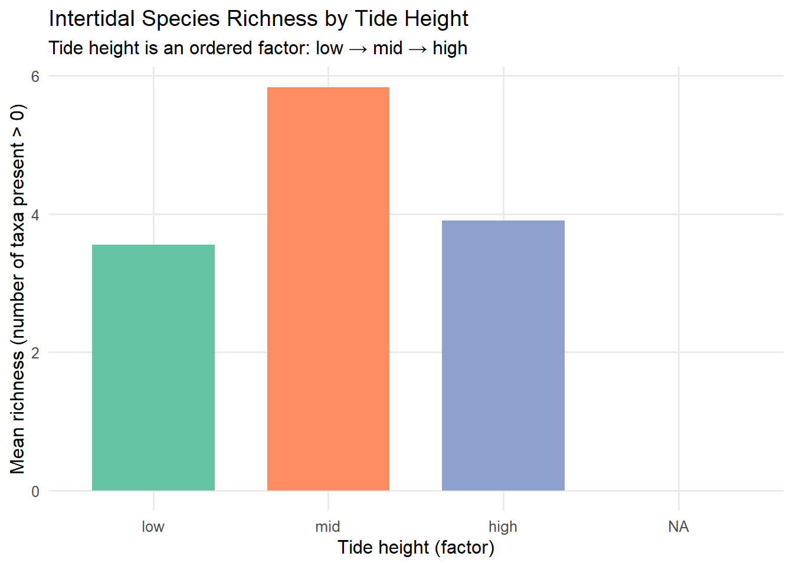

# Library
library(tidyverse)
library(janitor)
library(readr)
library(here)
library(tidyverse)
dir.create(here("Week_09","output"))Week 09 — Intertidal Analysis
Notes
fixed, simple names Orders tide as low > mid > high (quadrat) Orders site by latitude (south → north) from the latitude csv Bar plot
Read data & Clean intertidal csv
## Read data & Clean intertidal csv# Read data, clean names, and SAVE the result back to 'inter'
inter <- readr::read_csv(here("Week_09","data","intertidaldata.csv")) |>
janitor::clean_names() # The pipe passes the data and the result is saved.
# Read latitude data, clean names, and SAVE the result back to 'lat_tbl'
lat_tbl <- readr::read_csv(here("Week_09","data","intertidaldata_latitude.csv")) |>
janitor::clean_names() # The pipe passes the data.
# South to north : small to big
site_order <- lat_tbl |>
arrange(latitude) |> # Use lowercase 'latitude'
pull(site)
## site order in intertidal csv
inter <- inter |>
mutate(site = factor(site, levels = site_order)) # Use lowercase 'site'
# check
names(inter) # clean, lowercase names [1] "site" "transect" "quadrat"
[4] "bare_rock" "algae" "mussels"
[7] "small_barnacles" "large_barnacles" "gooseneck_barnacles"
[10] "anemone" "whelks_counts" "crabs_counts"
[13] "stars_counts" head(lat_tbl)# A tibble: 6 × 2
site latitude
<chr> <dbl>
1 Starfish Point 47.7
2 Cape Meares 45.5
3 Fogarty Creek 44.8
4 Cape Arago 43.3
5 Pyramid Point 42.0
6 Point St. George 41.8tide height factor (low → mid → high)
inter <- inter |>
mutate(
quadrat = case_when(
quadrat %in% c("Low .", "low .", "Low.", "low.") ~ "low",#Standardize "low" values #variable being modified is quadrat # %in% binary operator for argument
quadrat %in% c("Mid", "mid") ~ "mid",
quadrat %in% c("High", "high") ~ "high",
TRUE ~ tolower(quadrat) #Catch-all for other values
),
quadrat = factor(quadrat, levels = c("low","mid","high"))
)
levels(inter$quadrat)[1] "low" "mid" "high"simple richness per quadrat
organism_cols <- c("bare_rock","algae", "mussels","small_barnacles","large_barnacles","gooseneck_barnacles","anemone","whelks_counts","crabs_counts","stars_counts") ##columns after clean_names
present_cols <- intersect(names(inter), organism_cols) ### find the common columns
inter_rich <- inter |> ##taxa with value > 0 in each quadrat:richness
rowwise() |>
mutate(richness = sum(c_across(all_of(present_cols)) > 0, na.rm = TRUE)) |>
ungroup()Plot
# summarise by quadrat (tide height)
plot_dat <- inter_rich |> # pipe operator- pass it to the next operation
group_by(quadrat) |> # Group the data frame by tide height: low, mid, high).
summarise( # Calculate summary statistics for each group
mean_richness = mean(richness, na.rm = TRUE), #new column 'mean_richness' by calculating the arithmetic mean
.groups = "drop" # summarization, ungroup the resulting data frame
)
### Visualization
p <- ggplot(plot_dat,
aes(x = quadrat, y = mean_richness, fill = quadrat)) + # x-axis is 'quadrat' (tide height), # y-axis is 'mean_richness'
geom_col(width = 0.7) +
scale_fill_brewer(palette = "Set2",
guide = "none") +
labs(
title = "Intertidal Species Richness by Tide Height", # title
subtitle = "Tide height is an ordered factor: low → mid → high", # Subtitle, clarifying the nature of the x-axis variable
x = "Tide height (factor)", # X-axis label
y = "Mean richness (number of taxa present > 0)" # Y-axis label
) +
theme_minimal(base_size = 12) +
theme(panel.grid.minor = element_blank() # Remove the faint minor grid lines for a cleaner look.
)
p # Display the plot 
# Saving
ggsave(filename = here("Week_09", "output", "intertidal_richness_by_tide.png"),
plot = p, width = 8, height = 5, dpi = 320,
)